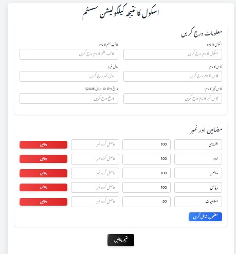
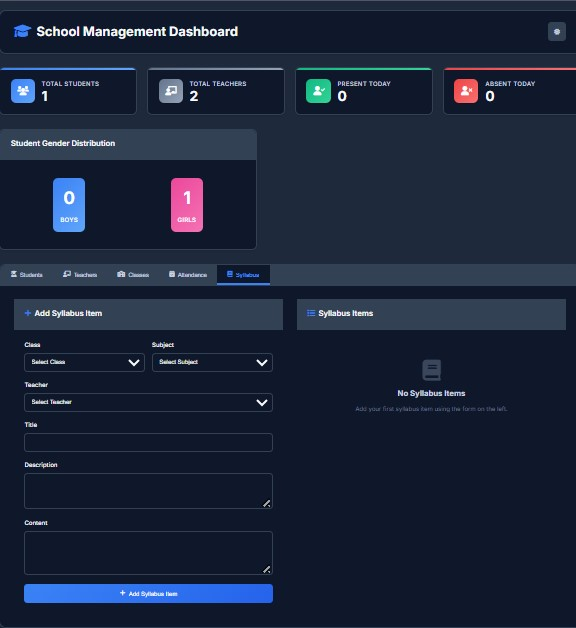

Project Overview
The School Management Dashboard is a comprehensive digital solution designed to streamline
administrative processes in educational institutions. This modern UI/UX design provides
a centralized platform for managing student records, tracking attendance, calculating grades,
and facilitating communication between teachers, students, and parents.
The design focuses on creating an intuitive and user-friendly interface that eliminates
manual paperwork, reduces administrative burden, and provides real-time insights into
student performance and institutional metrics through beautiful data visualization.
Key Features
Automated Attendance Tracking
Real-time attendance monitoring with automated reporting and analytics.
Teachers can mark attendance digitally, and the system generates comprehensive
attendance reports for administrators and parents.
Grade Calculation & Reporting
Automated grade calculation with customizable grading scales. The system
generates detailed report cards and performance analytics for each student.
Parent Communication System
Integrated messaging system for seamless communication between teachers
and parents. Automated notifications for important updates and events.
Student Records Management
Comprehensive database for storing and managing student information,
academic history, and personal details with secure access controls.
Analytics Dashboard
Interactive dashboard providing insights into student performance,
attendance trends, and institutional metrics with customizable reports.
Automated Notifications
Smart notification system that alerts parents about attendance, grades,
and important school events via email and SMS integration.
Project Screenshots

View Details
Main Dashboard Interface

Analytics View
Student Analytics & Performance Tracking
These screenshots showcase the comprehensive School Management Dashboard with modern UI/UX design,
featuring intuitive navigation, real-time analytics, and user-friendly interfaces for educational institutions.
Design Approach
User-Centered Design
Focused on creating intuitive interfaces that cater to different user roles
including administrators, teachers, students, and parents with role-based access.
Responsive Design
Fully responsive design that works seamlessly across desktop, tablet, and
mobile devices, ensuring accessibility for all users.
Visual Hierarchy
Clear visual hierarchy and information architecture that guides users
through complex workflows with minimal cognitive load.